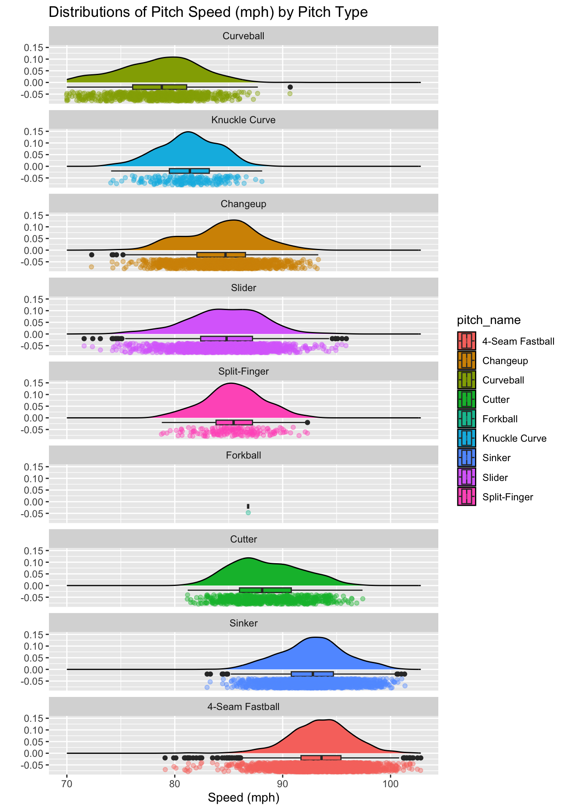

set.seed(434)
my_data_split <- initial_split(<name_of_your_dataframe>, prop = 0.8)
train <- training(my_data_split)
test <- testing(my_data_split)Data Visualization using ggplot()
Getting Started and Basics
The goal of any exploratory data analysis (EDA) is to learn about and from our data. You did some of that in Days 2 and 3, where you looked at techniques for tidy data analyses in R and also inline reporting within Quarto documents. While summary statistics are great, sometimes visuals are even more effective at helping us (and our readers) understand the data we are working with. This notebook will focus on data visualization using ggplot().
Open RStudio and the notebook you’ve been working on over the past two class meetings.
Training and Validation Data
If you’ve already split your data into training and validation sets (and you have a strong grasp of why we are doing that), you can skip to the next section of this notebook. If you haven’t done this before, then continue along with me here.
Our goal in MAT434 is to build models which help us classify observations as belonging to groups. There are two reasons we might do this.
- We want to understand which features are associated with group membership, and how.
- We want to build a model which will accurately predict group membership for new, previously unseen observations.
If we (and our model) get to see all of our available data during the learning/training process, then we can’t hope to know how well our model generalizes to new observations until it is too late! For this reason, we’ll hide some data from ourselves and our models – we’ll refer to this hidden data as validation data.
At the beginning of any analysis, if one of our goals is a model to be used for predictions, then we should split our data into training and test sets. We can do this with the initial_split() function from the {rsample} package, which is loaded when {tidymodels} is loaded.
- Add code to the
setupchunk of your notebook to load the{tidymodels}library. Run each of the lines of code in your setup chunk using eitherctrl+Enterorcmd+Return.
Now we’ll split our data into training and test sets.
- Open a new code cell and type/run the following commands.
The first line sets a seed for our random number generator so that our same results are reproduced each time we (or our collaborators) run the notebook. The second line marks each observation as belonging to training data or test data, with 80% of observations going to training. The third and fourth lines collect the training and test sets into their own data frames.
In general, we’ll do this near the beginning of any analysis. If you completed your tidy analysis work on your full data set, you can add this to the bottom of your notebook and just make note that we’ll split into training and test sets at the beginning of our analyses from here on out.
About ggplot for Data Viz
The ggplot() function provides us with a layered plotting syntax based off of the grammar of graphics. Plotting layers can include plot types (geometries), labels, themes, and more. Layers of a ggplot() object are separated by + signs rather than the pipe, although the behavior is similar.
A basic ggplot() might look like the following:
train %>%
ggplot() +
geom_boxplot(aes(x = pitch_mph)) +
labs(x = "Pitch Speed (mph)",
y = "",
title = "Distribution of Pitch Speed in Miles per Hour")- Add a new code cell to your notebook, type the code above into the cell, run it, and discuss the resulting plot.
- If you are working with the FAA Birdstrikes data, then choose a numerical variable from that data set that you are interested in building a boxplot for and replace
pitch_mphwith that variable in the plotting code.
As you can see above, we can pipe data into a ggplot(). This means that we can transform our data using a pipeline, perhaps engineering new features using mutate(), prior to plotting.
Basic Plotting
At a minimum, every plot will need data. The most convenient way to pass data to a plot is to pipe (%>%) it into ggplot(). Every plot also needs to include a geometry layer (geom_*()), which will include aesthetics – variables from data which determine features of the plot. If you want to override an attribute of the visual across the entire plot (say, set the fill color of a boxplot to purple, then you can set that parameter outside of aes() but still inside of the geometry layer). That is,
train %>%
ggplot() +
geom_boxplot(aes(x = pitch_mph), fill = "purple") +
labs(x = "Pitch Speed (mph)",
y = "",
title = "Distribution of Pitch Speed in Miles per Hour")In general, plot aspects determined by variables in the data set must be defined inside of aes(), while aspects which are globally defined for the plot layer should be defined outside of aes().
- Update the fill color of the boxplot in your notebook. Use any color you like. What happens if you set the
fillattribute inside ofaes()instead of outside?
Helpful Rules of Thumb
For now, having some basic rules of thumb for plot geometries might be helpful:
Univariate plots are plots in which a single variable is utilized.
Univariate geometries for a numerical variable:
- Histograms (
geom_histogram()) - Boxplots (
geom_boxplot()) - Densities (
geom_density())
- Histograms (
Univariate geometries for a categorical variable:
- Barplots (
geom_bar())
- Barplots (
Multivariate plots are plots involving multiple variables:
Bivariate plots between two numerical variables:
- Scatterplots (
geom_point()orgeom_jitter()) - Heatmaps (
geom_bin_2d()orgeom_hex())
- Scatterplots (
Bivariate plots between one numerical and one categorical variable:
Any of the univariate geometries for a single numerical variable with the categorical variable as a
fillcolor.- Often this results in overplotting, which can obscure the visual. You can use an
alphaparameter to control transparency. You can also facet withfacet_wrap()orfacet_grid()to obtain a different plot for each class of the categorical variable.
- Often this results in overplotting, which can obscure the visual. You can use an
Bivariate plots between two categorical variables:
- Barplots with Fill (
geom_bar()usingfillargument for second categorical variable –positionargument is also helpful for organizing bars) - Mosaic plots (
geom_mosaic(), which requires the{ggmosaic}package to be installed and loaded)
- Barplots with Fill (
Multivariate plots with three or more variables:
- Be careful not to include too much information in your plots – more is not always better.
- Use
facet_wrap()orfacet_grid()to split plots across categorical variables without cluttering individual plot panels with more information. - Experiment with the plot types described above, making use of
color,fill,shape, and/orsizeto show additional variables.
Next Steps
I don’t think you’ll learn much more by reading. Let’s start doing. Think of some plots that you’d like to build that will help you better understand your data. Briefly discuss those plots and what you hope they’ll tell you, and then build them into your notebook! Just remember to use your training when building these plots.
- Include several univariate plots to better understand individual variables.
- Move to multivariate plots to understand where associations between variables may exist.
Recreate my Viz
One of the really awesome things about ggplot() is that we can very easily create complex plots because of its layered plotting functionality. This means that we can include lots of geometry layers in a single plot, helping us understand a variable or collection of variables even better than a single visual type would facilitate for.
You want a plot that shows the density, a boxplot, and individual observed values of a data set across several categories all at once? No problem! Try and re-create the plot below if you like, or try building something similar.

If you haven’t done so already, bookmark Ced Scherer’s detailed {ggplot2} tutorial. If you are interested in data visualization, I strongly recommend returning to this and building at least a small portfolio of data visualizations to share!